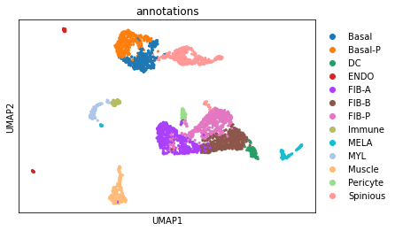
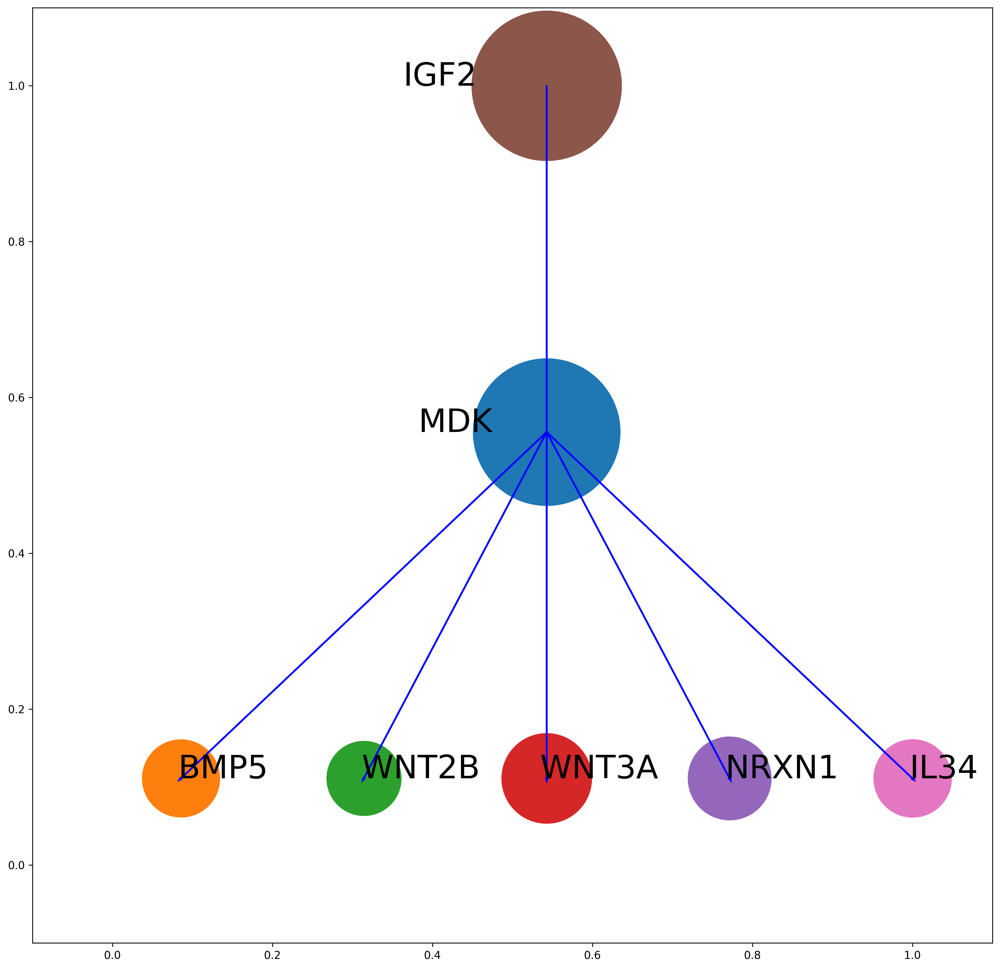
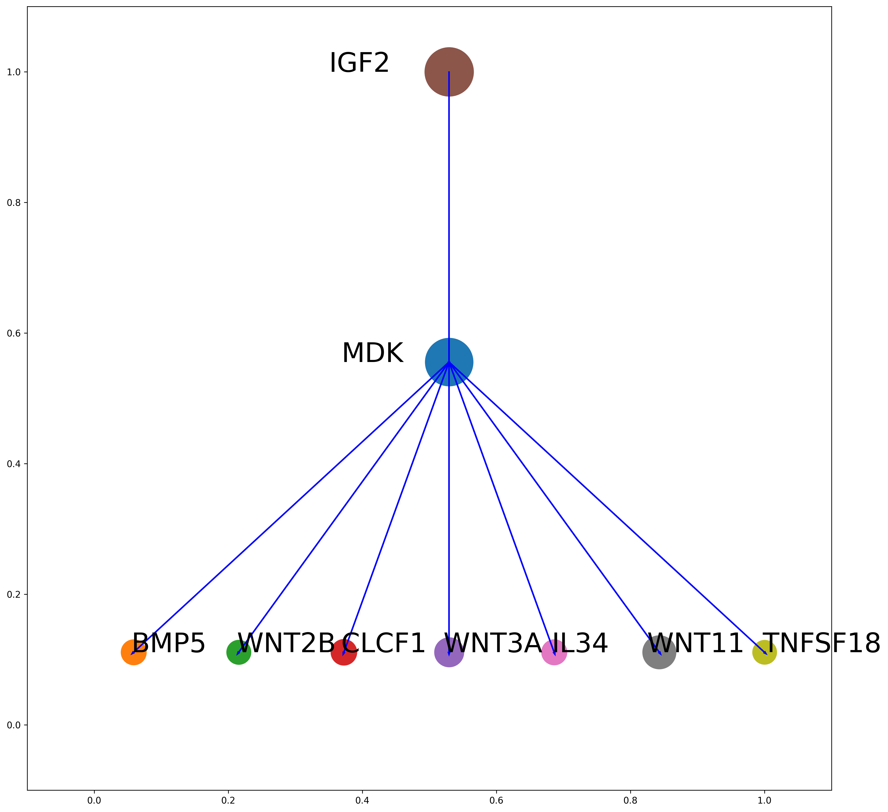
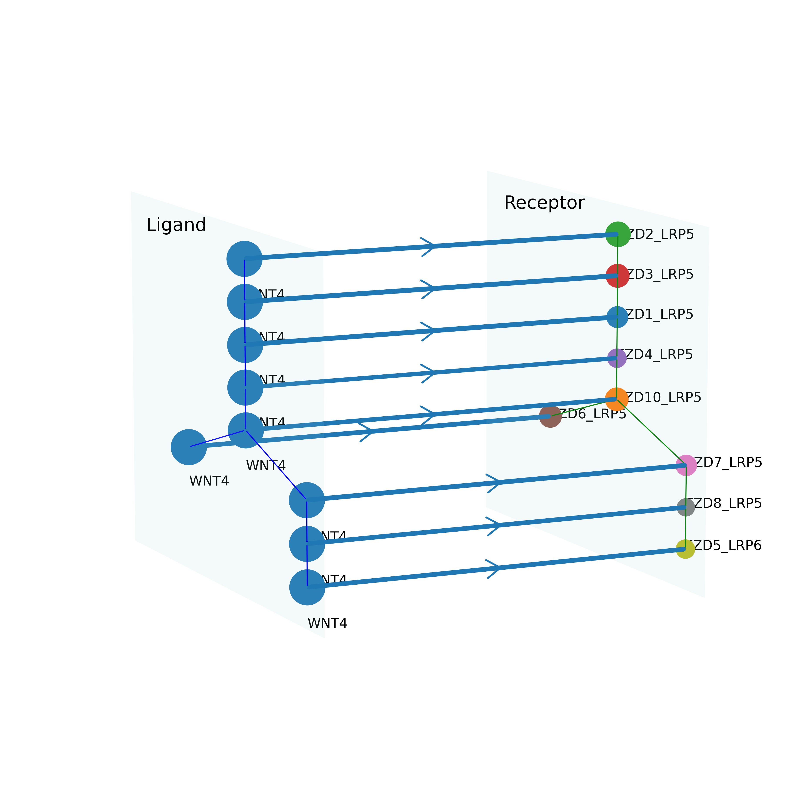
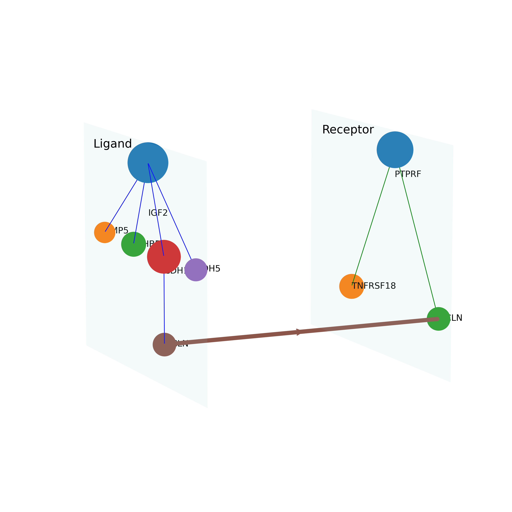
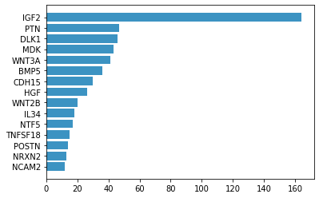
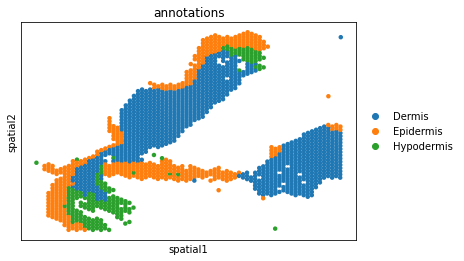
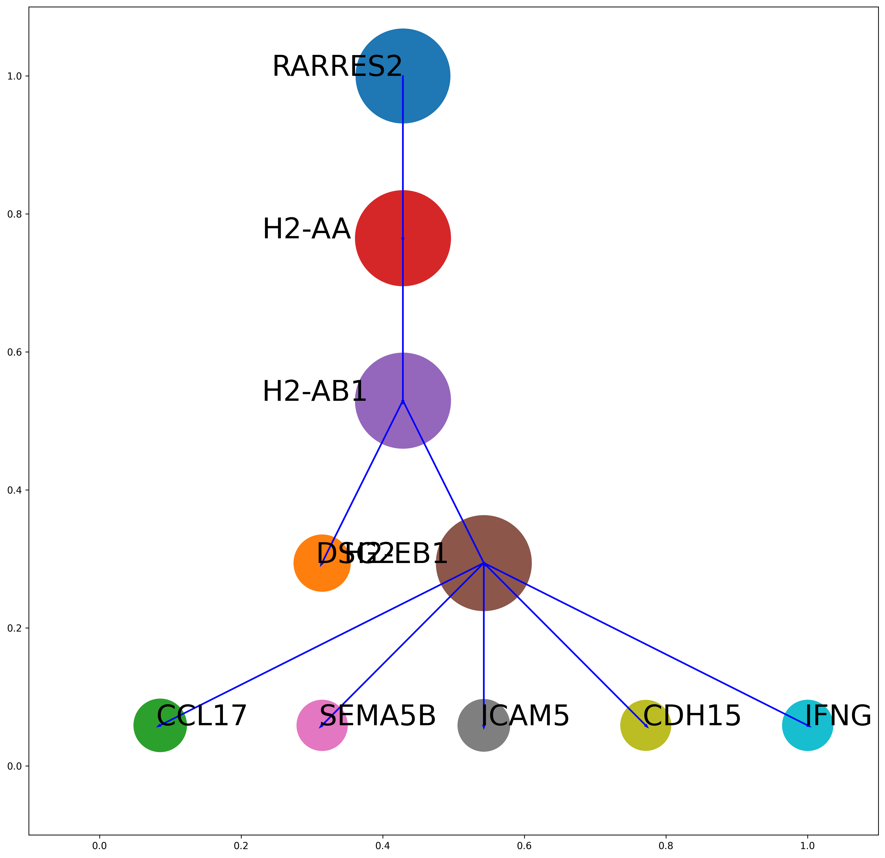
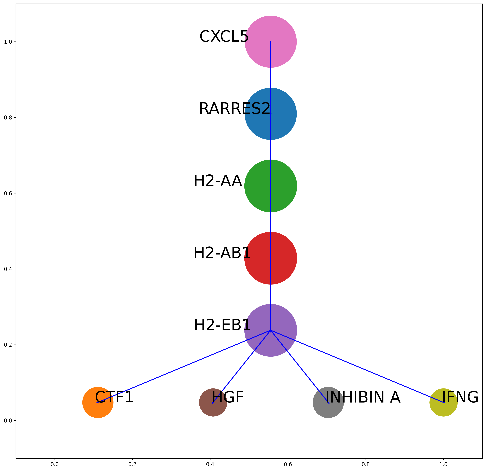

Part II: CrossChatT¶
Load required packages¶
[45]:
import crosschat as cc
import scanpy as sc
Load data and preprocess¶
[46]:
adata = sc.read_h5ad('../src/crosschat/data/mouse_embryo_skin3000.h5ad')
ccT_obj = cc.CrossChatT(adata,species="mouse")
ccT_obj.prepare_adata(normalize=False, scale=True, input='allgenes')
ccT_obj.Draw_annotations_umap()

Detect trees¶
Detected trees are ordered by number of nodes in each tree.
[47]:
ccT_obj.Detect_trees(type='l',tree_size=4, tree_scales=3)
ccT_obj.Detect_trees(type='r', tree_size=3, tree_scales=2)
ccT_obj.Detect_trees(type='lr_union',inclusive_threshold=0.98,disjoint_threshold=0.98,tree_size=4,tree_scales=3)
Parameters: - type: the type of trees to be detected (ligand trees, receptor trees, or ligand-receptor union trees) - tree_size: the number of nodes in the tree must be at least of tree_size - tree_scales: the number of scales in the tree must be at least of tree_scales - inclusive_threshold: a threshold of inclusion of cell groups to allow partial inclusion in trees - disjoint_threshold: a threshold of disjointness of cell groups to allow small amount of overlap in trees
Draw detected trees¶
[48]:
ccT_obj.Draw_MMT(type="l",tree_inds=[1])
1

Draw union of trees¶
[49]:
ccT_obj.Draw_big_tree(type='l',tree_inds=[3,5])

Draw CCC between detected trees of ligands or receptors¶
[50]:
ccT_obj.Draw_MMT_lr_union(tree_inds=[0])
0

Draw CCC between interacting ligand tree and receptor tree¶
[51]:
# Obtain the pairs of interacting trees. The last element represents the number of interactions between the trees
interacting_inds = ccT_obj.find_interacting_trees()
print(interacting_inds)
#ccT_obj.Draw_CCC_between_MMT(lr_tree_inds = [[2,3],[3,3],[4,4],[6,3]])
ccT_obj.Draw_CCC_between_MMT(lr_tree_inds = [[4,6]])
[[0, 3, 2], [1, 3, 2], [4, 4, 2], [5, 3, 2], [0, 4, 1], [1, 4, 1], [2, 3, 1], [2, 4, 1], [2, 6, 1], [3, 3, 1], [3, 4, 1], [3, 6, 1], [4, 2, 1], [4, 3, 1], [4, 5, 1], [4, 6, 1], [5, 4, 1], [6, 3, 1], [6, 4, 1], [7, 3, 1], [7, 4, 1], [8, 3, 1], [8, 4, 1], [9, 3, 1], [9, 4, 1]]

Plot frequency of ligand/receptor occurrence in ligands/receptors trees¶
[52]:
ccT_obj.plot_lr_frequency(type='l')

CrossChatT on spatial dataset¶
Load data and preprocess¶
[53]:
adata = sc.read_h5ad('../src/crosschat/data/mouse_wounded_skin_PO7_visium.h5ad')
ccT_obj = cc.CrossChatT(adata,species="mouse")
ccT_obj.prepare_adata(normalize=True, scale=False, input='allgenes')
Plot annotations in space¶
[54]:
sc.pl.embedding(ccT_obj.adata, basis="spatial",color="annotations")

Detect trees on spatial data.¶
Once we detected trees using spatial information, the rest of procedures are similar to those applied to scRNA-seq datasets.
[55]:
ccT_obj.Detect_trees_S(type="l", tree_size=4, tree_scales=3)
ccT_obj.Detect_trees_S(type="r", tree_size=4, tree_scales=3)
ccT_obj.Detect_trees_S(type="lr_union", inclusive_threshold=0.97, disjoint_threshold=0.97, tree_size=4, tree_scales=3)
[56]:
ccT_obj.Draw_MMT(type="l",tree_inds=[0,1],nodesize=10)
0

1
